KAY/O
БИОГРАФИЯ
KAY/O – боевая машина, созданная лишь для одной цели: истребить радиантов. Его способность подавлять умения врага существенно ослабляет команду противника и обеспечивает надежную защиту союзникам.
Ability
Q - СВЕТ/ОВАЯ ГРАНАТА - Выбирает ослепляющую гранату. Нажмите кнопку ОГОНЬ, чтобы бросить ее. Граната быстро взрывается, ослепляя всех в зоне видимости.

E - ЭПИ/ЦЕНТР - Выбирает подавляющий клинок. Нажмите кнопку ОГОНЬ, чтобы бросить его. Клинок взрывается в том месте, куда приземляется, и подавляет всех в радиусе взрыва.
C - ФРАГ/МЕНТ - Выбирает взрывоопасный фрагмент. Нажмите кнопку ОГОНЬ, чтобы бросить его. После приземления фрагмента происходит серия взрывов, каждый из которых наносит практически смертельный урон врагам, находящимся в самом центре.
X - NULL/CMD - МГНОВЕННО заряжается энергией поляризованного радианита, которая усиливает KAY/O и вызывает мощное излучение оттуда, где он находится.